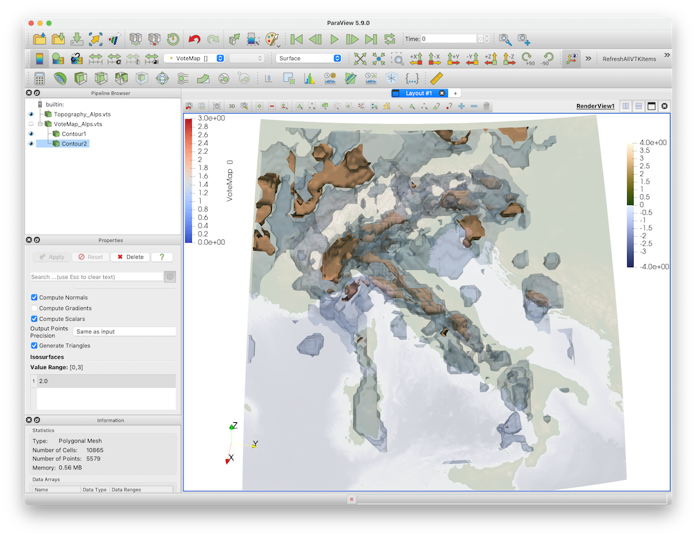

Votemaps
Aim
In this tutorial, your will learn how to create Votemaps that compare different tomographic models and look for similarities between different models.
Steps
1. Load data
We assume that you have all tomographic models already available as *.JLD2 files. In our example we use the data uploaded to https://seafile.rlp.net/d/22b0fb85550240758552/
Specifically, we will use the tomographic models of Paffrath, Zhao and Koulakov, as we have them all available in processed form Download the corresponding *.jld2 files to the same directory
using JLD2, GeophysicalModelGenerator
Pwave_Zhao = load("Zhao_Pwave.jld2","Data_set_Zhao2016_Vp")
PSwave_Koulakov = load("Koulakov_Europe.jld2","DataKoulakov_Alps")
Pwave_Paffrath = load("Paffrath_Pwave.jld2","Data_set_Paffrath2021_Vp")The 3 data sets all contain tomographic models for roughly the alpine area, but as you can see, they all have a different resolution and the fields are sometimes called different as well:
Pwave_Paffrath
GeoData
size : (162, 130, 42)
lon ϵ [ -13.3019 : 35.3019]
lat ϵ [ 30.7638 : 61.2362]
depth ϵ [ -606.0385 km : 31.0385 km]
fields: (:dVp_Percentage, :Vp, :Resolution)
PSwave_Koulakov
GeoData
size : (108, 81, 35)
lon ϵ [ 4.0 : 20.049999999999997]
lat ϵ [ 37.035928143712574 : 49.01197604790419]
depth ϵ [ -700.0 km : -10.0 km]
fields: (:dVp_percentage, :dVs_percentage)2. Creating a Votemap
The idea of Votemaps is rather simple:
- assume that a certain perturbation describes a feature (say, P wave anomalies >3% are interpreted to be slabs in the model of Paffrath)
- Everything that fulfills this criteria gets the number 1, everything else 0.
- Do the same with other tomographic models (using the same criteria or a different one).
- Make sure that all tomographic models are interpolated to the same grid.
- Sum up the 3 models.
- The resulting 3D map will have the number
3at locations where all 3 models see a high-velocity anomaly (say a slab), implying that this feature is consistent between all models. Features that have a number 1 or 2 are only seen in a single or in 2/3 models.
The result of this gives a feeling which features are consistent between the 3 models. It is ofcourse still subjective, as you still have to choose a criteria and as we are assuming in this that the 3 tomographic models are comparable (which they are not as they are produced using different amounts of datam, etc. etc.)
So how do we create Votemaps? Doing this is rather simple:
Data_VoteMap = VoteMap( [Pwave_Paffrath, PSwave_Koulakov, Pwave_Zhao],
["dVp_Percentage>3.0","dVp_percentage>2.0","dVp_Percentage>2.0"], dims=(100,100,100))This will look at the common lon,lat,depth ranges between all 3 models, interpret each of the models to a common grid of size (100,100,100) and apply each of the criteria specified The resulting GeoData struct looks like:
GeoData
size : (100, 100, 100)
lon ϵ [ 4.0 : 18.0]
lat ϵ [ 38.0 : 49.01197604790419]
depth ϵ [ -606.0385 km : -10.0 km]
fields: (:VoteMap,)And from this, we can generate profiles, visualize 3D features in Paraview etc. etc.
Write_Paraview(Data_VoteMap, "VoteMap_Alps")In paraview, this gives 
You can ofcourse argue that newer tomographic models include more data & should therefore count more A simple way to take that into account is to list the model twice:
Data_VoteMap = VoteMap( [Pwave_Paffrath, Pwave_Paffrath, PSwave_Koulakov, Pwave_Zhao],
["dVp_Percentage>3.0","dVp_Percentage>3.0", "dVp_percentage>2.0","dVp_Percentage>2.0"],
dims=(100,100,100))Similarly, you could only look at a single model (even when that is perhaps easier done directly in paraview, where you can simply select a different isocontour value)
This page was generated using Literate.jl.